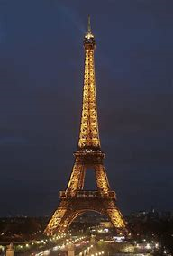
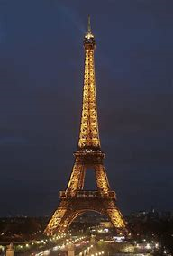
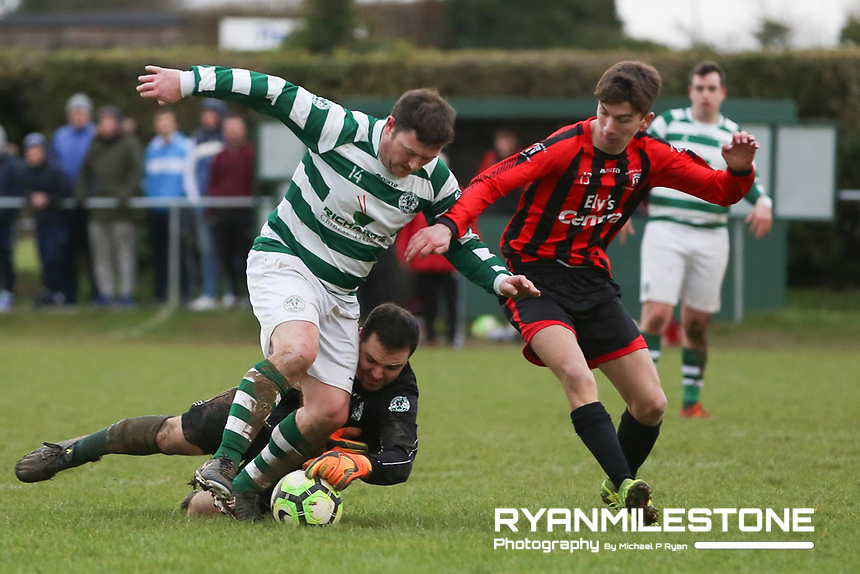
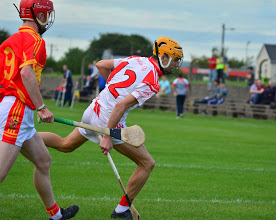

Travel
Santa Ponsa
Santa Ponsa is one of the largest urbanisations in the Southwest of Mallorca. Despite been developed only a few decades ago, it has become one of the nicest and most popular tourist areas in Mallorca.It is a great sun holiday destination with a great nightlife located beside the beach. It has an amazing waterpark nearby which is not to be missed.
Paris
Paris is one of the world's leading tourism destinations, and the city is home to an array of famous tourist attractions.The Eiffel Tower is a wrought-iron lattice tower on the Champ de Mars in Paris, France and a huge tourist attraction. To see it in person lit up at night is breathtaking.
Venice
Truly a terrific tourist destination, Venice was an incredible choice due to its rich history. There was so much to do and a beautiful, surreal town. Sightseeing alone could fill a tourists needs for life!.One of the most incredible sights i have ever seen is St Mark's Basilica. One can simply not enjoy Venice enough and i wish to return.
 

Sports
Soccer
I started playing soccer from the moment i could walk.Soccer is by far my favourite sport.I play for my local team Peake Villa Fc. We would widely be regarded as one of the best junior football clubs in Munster. I play as a striker and best traits would be shooting, workrate and my pace.
Swimming
I took up swimming when i was about 7 and love it ever since. I have competed in many galas and have completed life guard courses. When I was 18 I became a fully qualified lifeguard.
GAA
GAA is a mssive part of Irish Culture so without doubt I've played from a young age. GAA is a huge part of my family also as my Dad represented Tipperary in Football.I still play football for Loughmore GAA Club.
 